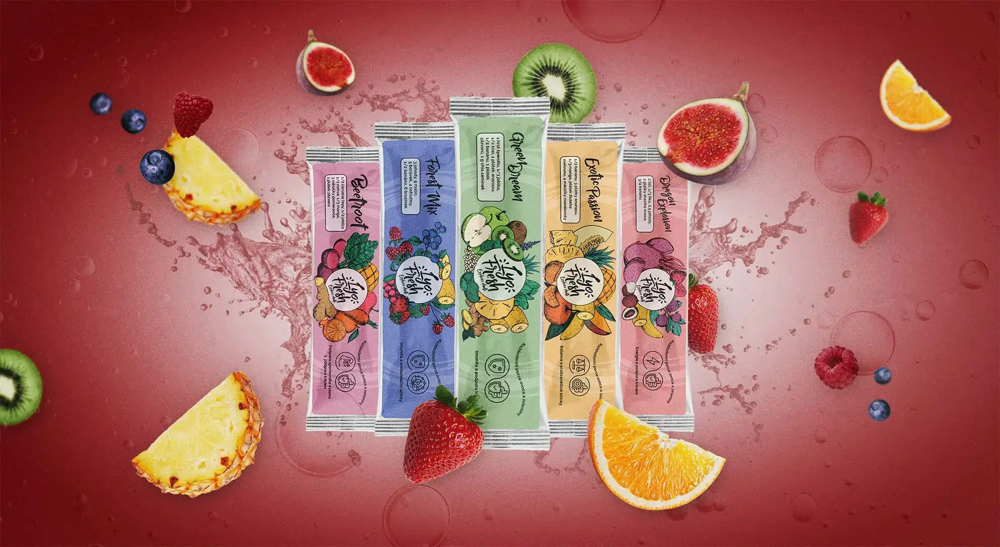
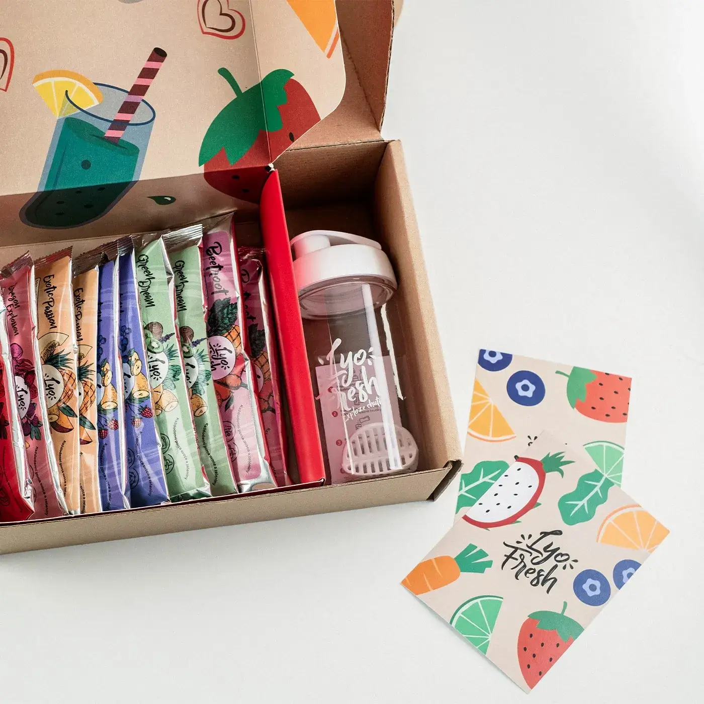
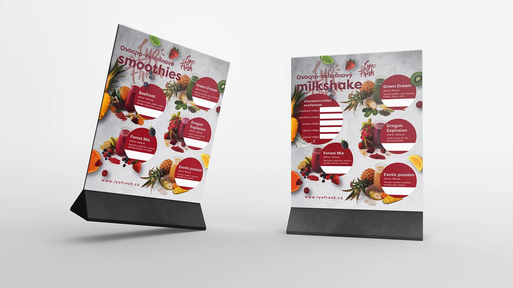
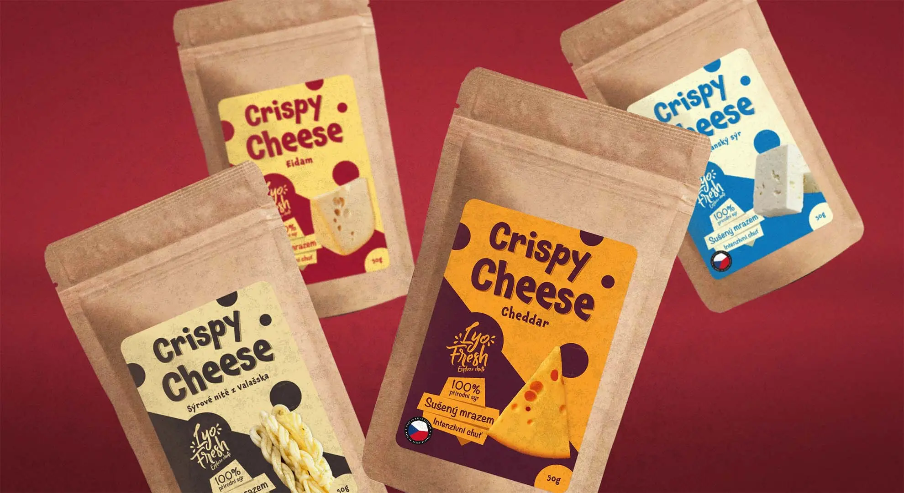

Lyo Fresh Cheese
Služby
Vizuální marketing
Motion
Tiskoviny
LyoFresh se specializuje na výrobu praktických instantních smoothies, které vznikají z vybraného ovoce a zeleniny metodou lyofilizace, neboli sušení mrazem. Tímto způsobem se zachovávají vitamíny, minerály a chuť surovin.
S LyoFresh jsme převážně pracovali na etiketách, obalech pro jejich výrobky a dalších tiskových produktech. Má spolupráce byla založena na podpoře této inovativní společnosti, která mění pohled na stravování a zdravý životní styl.






?
?